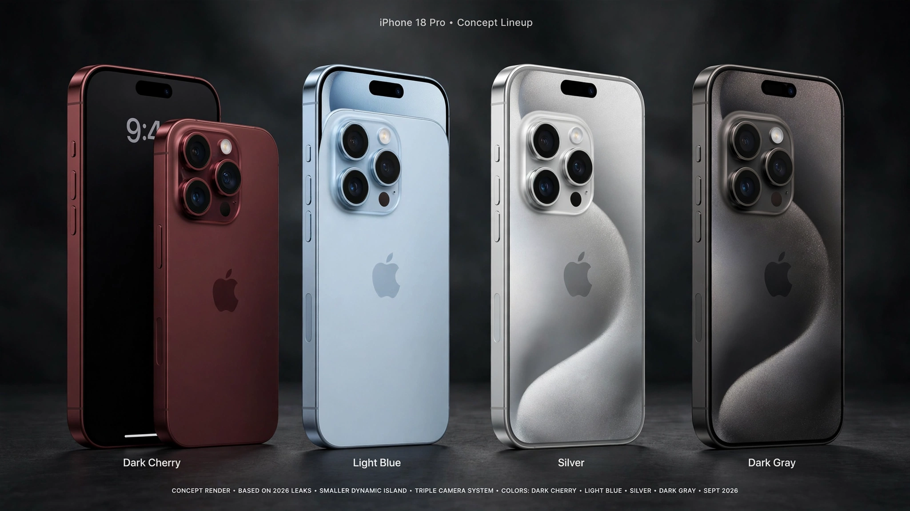

Is the iPhone 18 Worth It? Probably Not, and Here's the Math

The rumored iPhone 18 Pro lineup concept. Photo: TechWither Archives
Every September, Apple stands on a stage and tells us this year's phone is the best one it has ever made. It says this every year, and each time it's technically true, because a phone that's 8% faster than last year's is still faster. That doesn't make it worth a grand.
I love gadgets. I'll happily geek out over a new sensor or a better hinge. But I also can't stand being sold a story, so let's look at what the iPhone 18 offers and what it costs.
What's Actually Rumored
Everything here is leak and supply-chain chatter until Apple says otherwise, but the picture is consistent:
- A faster chip: The Pro models are expected to get the A20, built on a 2nm process, with roughly 15% better performance. That's a real gain, but nobody was asking for 15% more speed to scroll Instagram.
- Small display and camera tweaks: Think a smaller Dynamic Island and camera refinements. The design will look familiar, as it has for years.
- Better battery life: Efficiency gains should help the most common complaint. It's also the easiest thing to fix for about the price of a nice dinner.
The Yearly Upgrade Treadmill
Apple's business depends on you believing that last year's phone is now old. The upgrades are pitched as revolutionary, but they're mostly small steps: a slightly better camera, a slightly faster chip, a new color. A three-year-old flagship still handles email, maps, photos, video calls, and banking without breaking a sweat.
The pricing pressure is also getting worse. Estimates suggest the iPhone 18 Pro could start at $1,299, with the Pro Max at $1,399, driven by rising RAM costs and chip shortages. So the phone gets a bit better, and the price gets a lot bigger.
The AI Question Nobody Wants to Answer
Apple Intelligence and every other "AI phone" feature come with big promises, so here's a fair question: how many times this week did you use one?
If you use it daily for summarizing long threads or cleaning up photos, great. But for most people, phone AI is a handful of features they tried once and forgot. Companies are chasing the AI story because it sells hardware, not because your phone was clearly missing it.
Why Keeping Your Old Phone Is the Smarter Money Move
Here's a practical breakdown:
- The upgrader: You buy a $1,199 phone every year and get about $600 back in trade-in. Real cost: around $600 a year.
- The holder: You buy a $1,199 phone and keep it for four years. Cost is about $300 a year. Even after a ~$100 battery replacement in year three, you're only at about $325 a year.
That's a gap of around $275 to $300 a year. Over a decade, that's close to $3,000 you never spent—money that could grow significantly if invested.
So, Should You Buy It?
Buy it if: Your phone is 4+ years old, the battery is dead, or you're a heavy professional user who genuinely needs the performance gains.
Skip it if: You own an iPhone from the last two or three years, you just want a fresh battery, or you're mainly drawn in by marketing hype.
The best phone is the one that still does everything you need. If yours does, keep it. Your bank account will thank you.